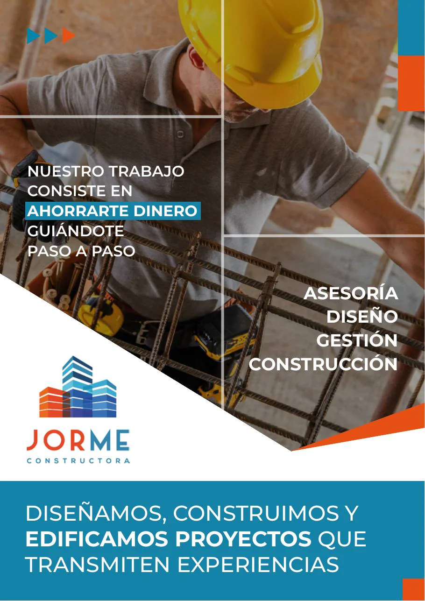
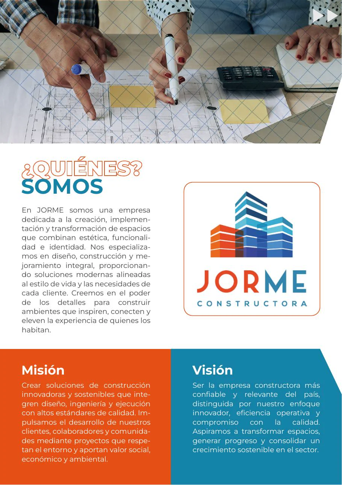
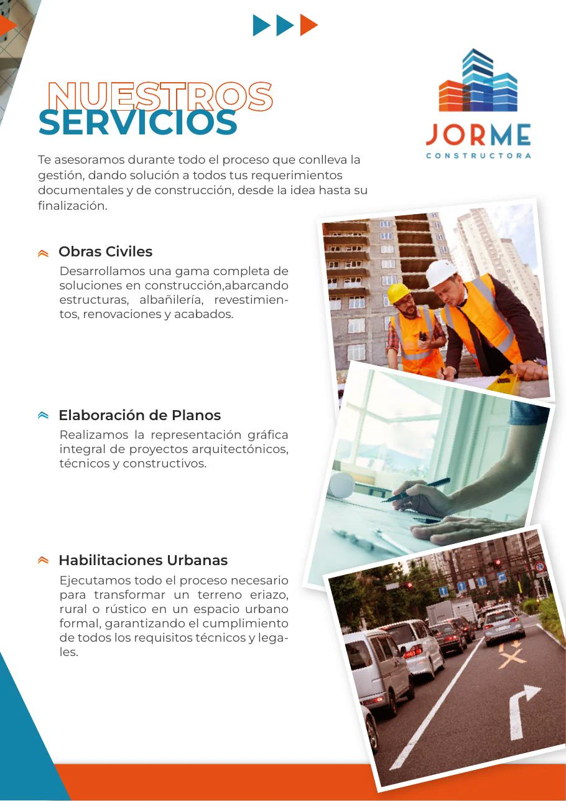
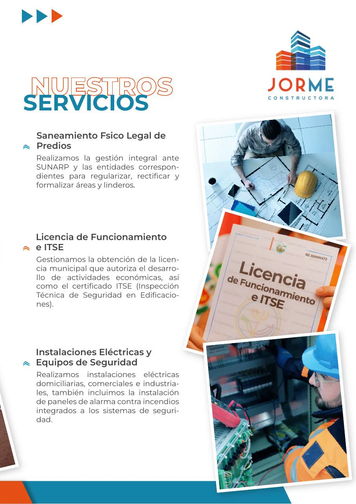
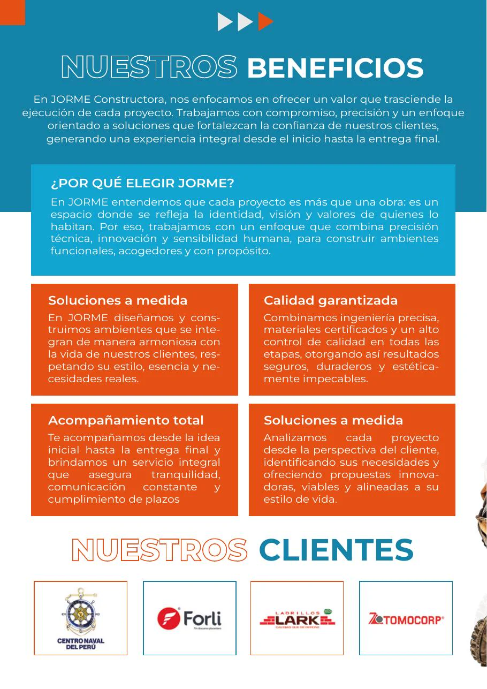
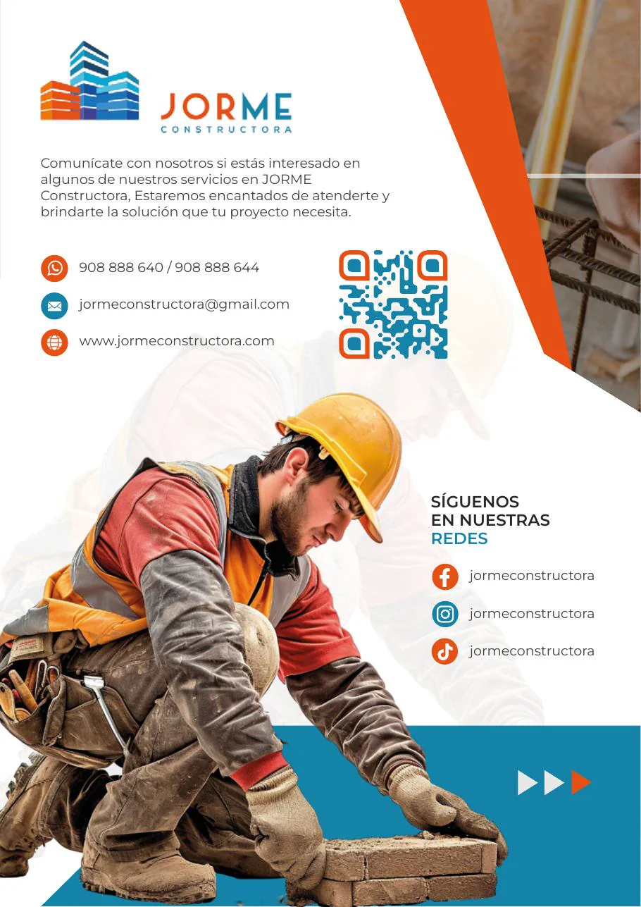

JORME CONSTRUCTORA / 6 PÁGINAS
Brochure corporativo
Diseño editorial orientado a presentar la empresa, sus servicios, beneficios y canales de contacto con una identidad visual consistente.





